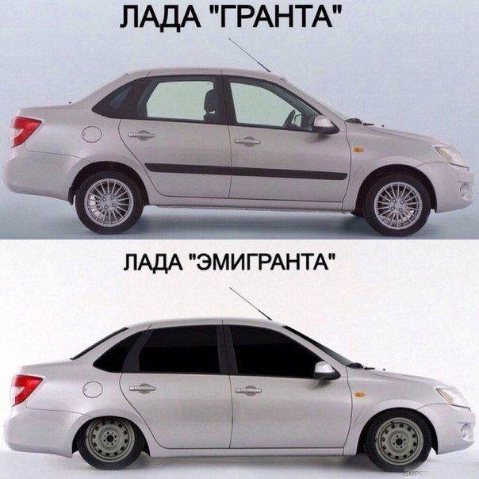

 Lada («Ла́да») — марка автомобилей, производимых АО «АвтоВАЗ». Ранее использовалась только для автомобилей, поставлявшихся на экспорт, а для внутреннего рынка автомобили производились под маркой «Жигули». Следующее же семейство стало называться «Лада Спутник» и поставлялось на экспорт как «Lada Samara», а в 1991 году стало называться так же и внутри страны.
Ребрендинг 2015 года
С 1 апреля 2015 года изменился фирменный логотип Волжского автозавода «Ладья», он стал более объёмным
Слияние Lada и Dacia
14 января 2021 года Renault Group на презентации новой стратегии Renaulution, направленной на получение прибыли вместо генерации объёмов продаж, объявила о слиянии брендов Lada и Dacia. Объединение будет не полным — модели двух брендов переведут на единую платформу CMF-B, однако названия брендов сохранятся. Модели тоже будут разными, ровно как и позиционирование марок на рынке
Продажи в ЕС
В 2016 году в странах Европейского Союза объём экспортных поставок «АвтоВАЗа» составил около 16,5 тыс. автомобилей, а в 2017 году экспорт вырос на 31 % и составил около 24 тыс. экземпляров.С начала 2017 года седан LADA Vesta продается в Австрии, Болгарии, Венгрии, Германии и Литве.За 2017 год было продано 5167 моделей LADA в странах ЕС, что на 28,6 % больше показателя за 2016 год. 2,6 тыс. автомобилей было реализовано в Германии (Lada 4x4 — 1470 автомобилей; Granta — 693; Vesta — 472)[4][5]. В апреле 2019 «АвтоВАЗ» принял решение прекратить поставки автомобилей LADA в Европу «в связи с ужесточением экологических норм в европейских странах»
Интересные факты